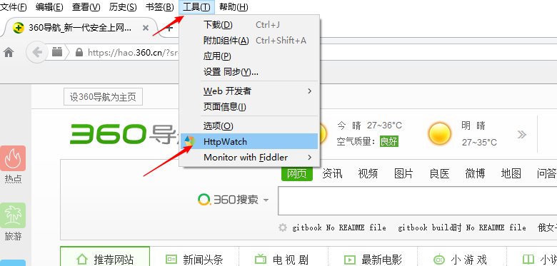
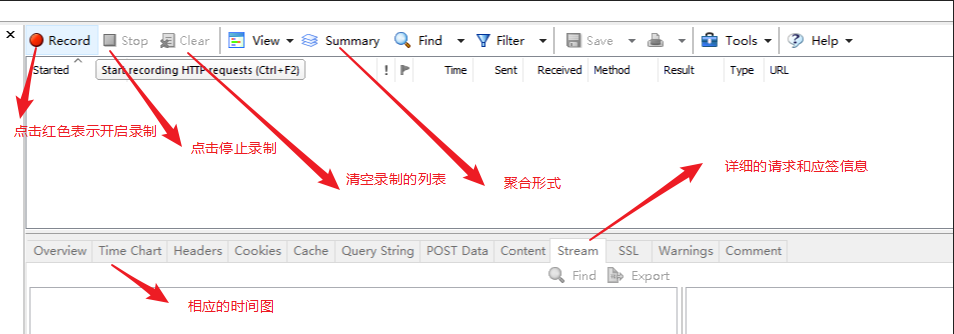
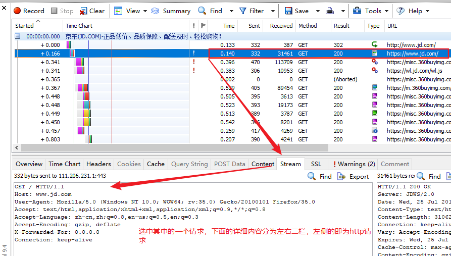
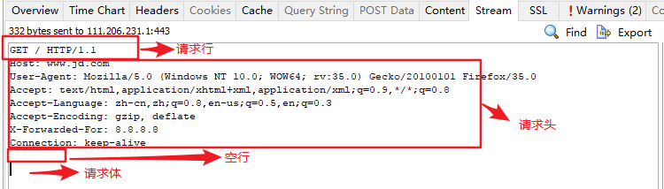
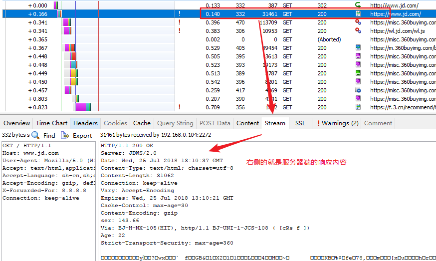

HttpWatch工具
HttpWatch是强大的网页数据分析工具.可以抓取http数据包，可以在IE和火狐浏览器上使用。
环境准备：目前不是所有的操作系统和浏览器都能使用httpwatch，此处可以选择 win10/8/7系统 + httpwatch9.4.17 + firefoxv35.0 版本。
工具准备：win10/8/7系统 httpwatch9.4.17 firefox v35
- 断网安装火狐35.0 版本( 断网以免自动更新 )，一路下一步即可，安装后可以在选项中设置取消自动更新【 高版本火狐不支持httpwatch 】 （已经安装高版本的火狐浏览器的先卸载火狐，然后安装火狐35.0 版本）

httpwatch安装：一路下一步即可
安装完成后在火狐浏览器工具中可以看到httpwatch

Request Grid
常用功能描述：

部分信息说明：

Time：请求所消耗的时间。
Sent：提交该请求所发送的字节数。
Received：提交请求后服务器返回的字节数。
Method：提交请求的方法。
Result：请求处理的结果。
Type：服务器返回内容的类型---text/html、image/gif、text/css
URL：请求的URL地址。
在测试过程中主要关注Time、Received、Result三项的值
Time是请求的耗时，需要注意耗时大的请求，
因为在整个业务响应时间过程中，耗时长的请求是最有可能需要调优的；
Received是返回的字节数，在测试过程中需要关注返回字节数较大的需要，
因为返回的字节数较大，会影响整个请求的耗时，它也是调优需要重点关注的内容；
Result是指请求响应的状态，需要关注其响应状态为非200的值，
请求响应状态只有200是正确的，其他的都是异常的，
如果请求出现异常情况，说明事务很有可能操作失败，这样直接影响了事务的成功率。
HTTP Request

HTTP 请求结构
在 HTTP里 请求和响应的消息结构都被分为三个部分，分别是 行、头、身体，所以请求消息的三个结构为请求行、请求头、请求体。( 头和体之间默认有一个空行 )
1.请求行：显示客户端请求方法 ，协议 及版本号
2.请求头：设置相应的参数
3.请求体：填写具体的提交数据

HTTP Response

和 HTTP 请求里的内容是一样的，在HTTP 响应中同样分为响应行 、响应头、响应体三个部分，响应行里包含了协议 、版本号、状态码、状态消息，响应头声明了一些服务器向客户端表述的内容，响应体中是具体的当前请求服务器端返回的文本内容
如果发生了重定向，location后面跟的就是重定向的URL信息